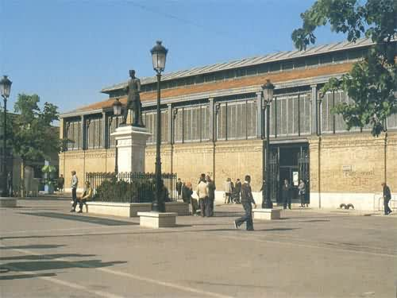
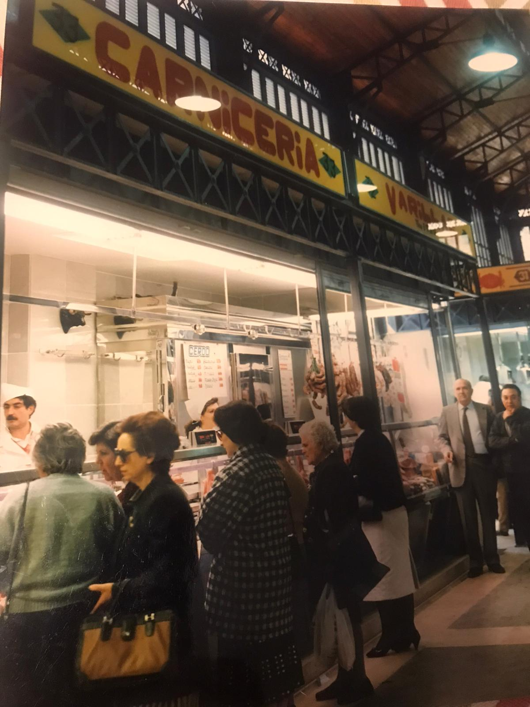
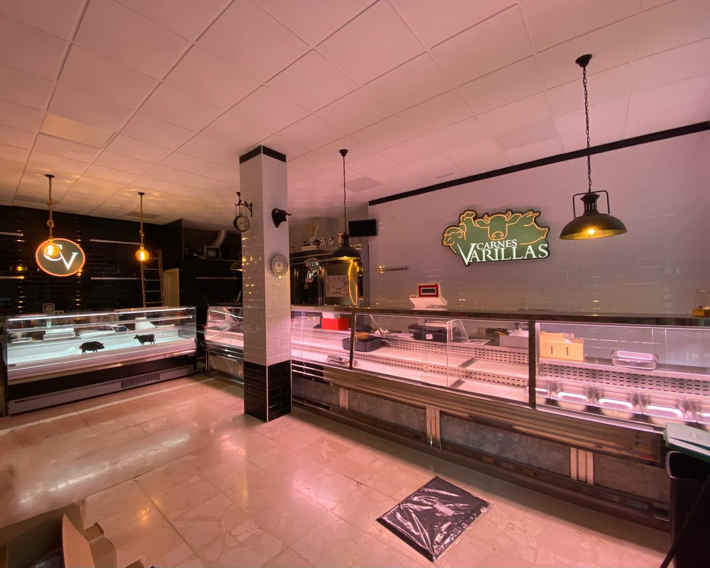
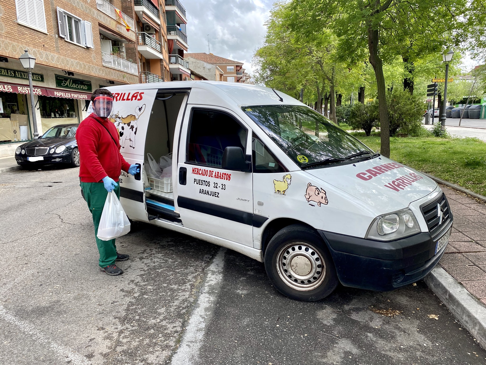
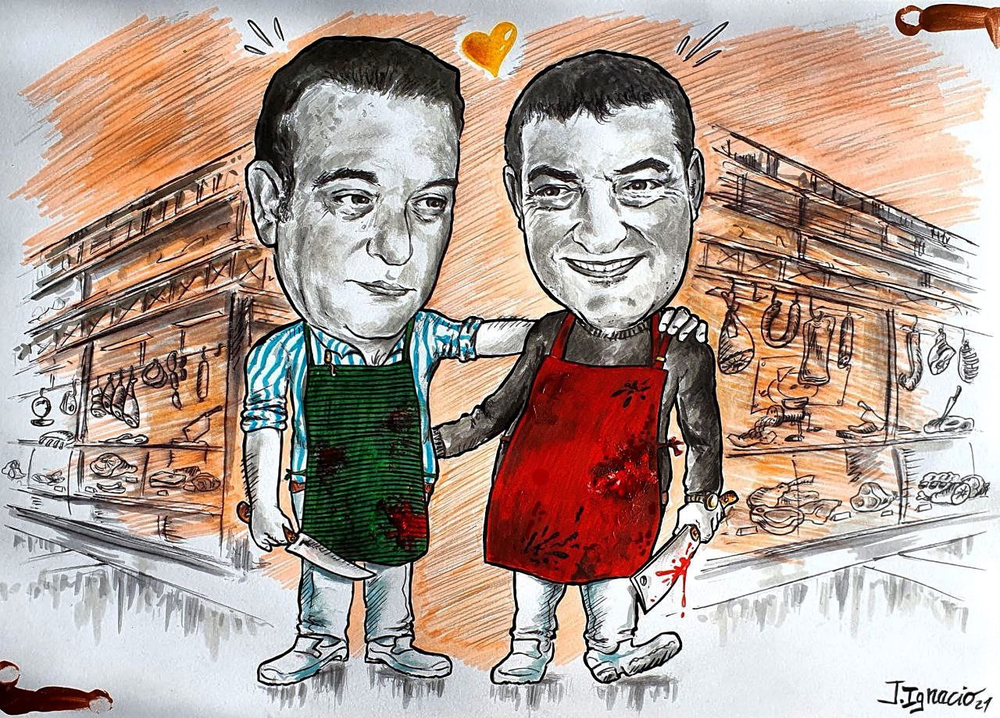

NUESTRA HISTORIA
En el año 1920 nuestro abuelo Ángel Durán Gutierrez (Varillas) montó una pequeña
carnicería en el Mercado de Abastos de Aranjuez dedicada exclusivamente a la venta de vacuno menor
(ternera), cordero lechal y elaborados caseros.Actualmente nos encontramos en la cuarta generación de carniceros gracias a la confianza que nuestros clientes
siempre han depositado en nosotros.


101 años después, tras una gran etapa en el Mercado de Abastos hemos decidido emprender una nueva aventura
abriendo un local independiente en Aranjuez junto a nuestro obrador, donde elaboramos todo tipo de productos
manufacturados. Fué una decisión difícil, tras tragar saliva y decir adiós a decenas de años en un mismo establecimiento,
a recuerdos forjados durante todos esos años y a amigos comerciantes y antecesores de éstos,
conseguimos mirar hacia adelante para poner rumbo a algo completamente desconocido para nosotros. Gracias a que nunca nos
faltó apoyo por todas las partes, compañeros y clientes, pudimos dejar el Mercado de Abastos con una sonrisa de oreja a oreja.


Este cambio lo hicimos justo después de afrontar la pandemia de la mejor forma posible, ofreciendo
a nuestros clientes un servicio de reparto a domicilio que sería clave para poder mantenernos en pie y ganar la confianza
de nuevos clientes a los que hoy podemos considerar buenos amigos.
Gracias a vosotros y a nuestra dedicacíon, lo que empezó siendo un vertiginoso paso hacia lo
desconocido se ha convertido en un éxito personal y comercial.
Estaremos encantados de seguir dado el mejor servicio a nuestra clientela tras el nuevo cambio generacional
en el que nos encontramos junto con nuevos productos, técnicas y herramientas que harán de esta experiencia
algo de lo que puedan disfrutar y recordar con cariño.
¡MUCHAS GRACIAS!
